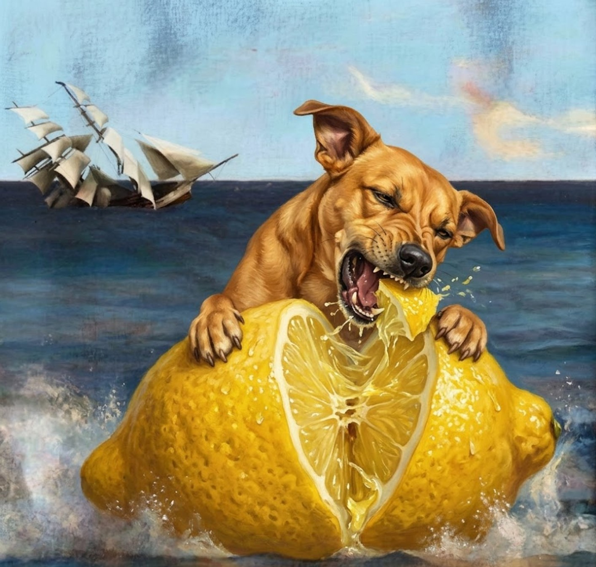

01
Construir audiência
Transformar @limaocachorro em ativo digital proprietário.
Crescimento · retenção · recorrênciaUm brasileiro em Dhaka durante a Copa do Mundo 2026, tentando entender por que um país que nem joga o torneio vive a rivalidade Brasil × Argentina como se fosse sua.

A premissa é forte: um brasileiro em Dhaka durante a Copa, em um país que não disputa o torneio, mas vive Brasil × Argentina com intensidade rara. O choque cultural é claro, simples de entender e altamente compartilhável. A atualização estratégica transforma o projeto em um ativo vendável — com personagem, narrativa, formatos recorrentes, plano de distribuição e janelas de marca.
Transformar @limaocachorro em ativo digital proprietário.
Crescimento · retenção · recorrênciaProvar que o personagem sustenta quadros recorrentes.
Views qualificadas · shares · comentáriosConverter a ideia em projeto financiável.
Patrocínio · licenciamento · branded contentGerar material para cortes, mini-doc e case posterior.
Volume captado · peças finalizadasO humor nasce da situação, não da ridicularização. Limão Cachorro erra, aprende e se deixa transformar pela experiência.
Reações ao nome, comida, cidade, futebol e costumes.
Gera surpresa sem depender de piada ofensiva.Torcedores locais defendendo seleções sul-americanas.
Cria conflito simples e recorrente.Limão tenta entender, convencer e participar.
Humaniza o personagem e aproxima o público.Biryani, ruas, famílias, bandeiras, festas e jogos.
Expande o projeto para além do esporte.Limão procura sinais do Brasil em Dhaka: camisas, bandeiras, torcedores e histórias.
Diária durante jogos e datas fortesMoradores defendem Brasil ou Argentina. Limão argumenta pelo Brasil — e quase sempre apanha no debate.
2× por semanaBangladeshis tentam pronunciar Limão Cachorro, Lemon Dog e a versão em bengali.
Recorrente, formato rápidoComida local como entrada para conversas sobre futebol, família e torcida.
1–2× por semanaHistórias humanas de torcedores: por que Brasil? Por que Argentina? Como isso começou?
Semanal no YouTubeBastidores, deslocamentos, erros, chuva, jogos e preparação.
Stories diáriosFalamos com quem consome a Copa como entretenimento social, cultura pop, viagem, humor e descoberta.
Dor/desejo: quer ver algo de Copa que ainda não viu.
Mensagem: um brasileiro encontrou uma Copa paralela em Bangladesh.
Formato: Reels curtos e compartilháveis.
Dor/desejo: quer debate, provocação e memória afetiva.
Mensagem: em Dhaka, Brasil e Argentina dividem ruas e famílias.
Formato: quadros de rua e enquetes.
Dor/desejo: quer surpresa, comida, cidade e humanidade.
Mensagem: futebol como porta para descobrir Bangladesh.
Formato: mini-docs e carrosséis.
Dor/desejo: quer representação respeitosa e interessante.
Mensagem: sua cultura retratada com afeto, humor e escuta real.
Formato: conteúdo bilíngue e collabs locais.
Vídeos curtos, quadros fixos, collabs, bastidores. Canal central do projeto.
Cortes mais espontâneos, desafios, reações, humor. Não deve ser secundário.
Reaproveitamento dos melhores cortes. Ajuda em busca e longevidade.
Mini-doc semanal e episódio final. Transforma post em IP audiovisual.
Enquetes, bastidores, missões do público. Importante para recorrência.
Participação de criadores de Bangladesh. Reduz risco cultural e amplia alcance.
Limão se apresenta como embaixador informal do torcedor brasileiro perdido em Bangladesh — adesivos, passaporte simbólico e carimbos de missões.
Marca pode assinar desafios, kits, uniformes, cards e episódios.Cada experiência rende um carimbo: comeu biryani, achou torcedor do Brasil, aprendeu palavra em bengali, viu jogo na rua.
Ótimo para gamificação, social posts e ativações promocionais.Visual mostrando ruas, bairros, bandeiras, bares e torcedores de cada lado da cidade.
Entregável patrocinável com alta utilidade editorial e visual.Seguidores enviam tarefas: achar uma camisa, aprender uma frase, assistir jogo com argentinos, provar comida local.
Aumenta comentários, salvamentos e retorno diário ao perfil.Mantemos a operação leve, mas formalizamos as funções críticas para reduzir risco e aumentar performance.
Conduzir encontros, desafios, narração e relação com público.
Locações, contatos, tradução cultural, segurança e autorizações.
Apoio em entrevistas e legendas.
Transformar material em peças publicáveis em até 24h.
Responder audiência, organizar enquetes e monitorar oportunidades.
Evitar erros de abordagem, contexto religioso e leitura social.
Testar personagem, tom e quadros.
10 Reels-piloto · identidade visual · manifesto do perfilComeçar comunidade antes da viagem.
Conteúdos sobre Bangladesh, Copa e preparaçãoFechar marca, produtora ou coprodução.
Mídia kit · cotas · episódio-piloto · plano de entregasAmarrar operação em Dhaka.
Fixer · tradutor · locações · calendário · contatosCaptar e publicar durante a Copa.
Reels diários · Stories · collabs · mini-docs · cobertura de jogosTransformar conteúdo em ativo duradouro.
Mini-doc final · case de marca · compilados · relatório39 dias em Dhaka, considerando passagem, hospedagem, alimentação, transporte, documentação, seguro, equipamento, comunicação, despesas pré-viagem e reserva de imprevistos.
Viável se já houver equipamentos e operação muito enxuta. Maior risco de qualidade e resposta rápida.
Melhor equilíbrio entre segurança, permanência, equipamentos e entrega editorial.
★ Recomendação Limão CachorroReforço operacional, edição melhor e margem maior para imprevistos.
Equipe de suporte, hospedagem superior e estrutura mais robusta.
Visualizações com retenção mínima de 3s, 50% e conclusão.
Compartilhamentos / alcance total. Principal indicador de potencial viral.
Novos seguidores / alcance de cada peça — mostra quais quadros convertem.
Permite comparar eficiência com mídia paga.
Comentários, salvamentos, respostas e DMs — conexão real, não apenas curtidas.
Valor de mídia, patrocínio, leads, tráfego ou conversões para o parceiro.
Plano de distribuição, collabs e verba mínima de impulsionamento.
Produtor local, consultor cultural, tradução e regras de conduta.
Episódio-piloto e testes antes da viagem.
Calendário flexível, equipamento protegido e locações cobertas.
Editor rápido remoto e fluxo de arquivos diário.
Termos simples, consentimento verbal gravado e cuidado especial com menores.
A conversa sai de “custo de viagem” e entra em propriedade de conteúdo.
Um filme dentro do projeto
Dentro do universo Limão Cachorro existe um mockumentary autoral — meio documentário, meio pesadelo lúcido. O filme é o desdobramento longo do projeto: um tratamento cinematográfico que transforma o personagem em auteur excêntrico investigando, em Dhaka, uma rivalidade que não tem terreno físico, só mental. Lynch encontra Werner Herzog, e o limão chora amarelo e azul.
LoglineAcclaimed and eccentric documentarian Limão Cachorro travels to Dhaka to investigate the fierce, inexplicable rivalry between Bangladeshi supporters of the Brazilian and Argentine national teams. What begins as a sports documentary dissolves into a psychological labyrinth of flickering neon, psychic warfare, and the ghost of a stray dog.
A mix of shaky, handheld documentary footage (like The Office or Spinal Tap) and agonizingly slow, static wide shots with unsettling symmetry — pure Lynch.
Green, yellow, light blue and white oversaturated to the point of glowing in the dark.
The constant, oppressive hum of Dhaka traffic fades abruptly into deafening, echoing silence.
Sudden bursts of distorted samba music or slowed-down tango. The sound of a football bouncing slowly, heavily, like a heartbeat.
Delivered in a hushed, overly dramatic deadpan — reminiscent of Werner Herzog reading a surrealist poem.
Act I
The documentary opens with Limão Cachorro standing in a crowded Dhaka street during a monsoon. He is wearing a yellow raincoat and holding a half-eaten lemon.
Limão (V.O.)"They told me 170 million souls lived here. But as I step off the plane, I realize they are not citizens of Bangladesh. They are phantoms of a war fought on a grassy rectangle 15,000 kilometers away."
Drone footage of Dhaka shows buildings entirely draped in miles of Brazilian and Argentine flags. The flags seem to breathe.
— The First Interview —
Limão interviews a local butcher named Tariq. Tariq wears a pristine 1994 Romário jersey. He stares directly into the camera for three minutes without blinking.
Tariq"The canary does not sing on Thursdays. It only weeps for the ghost of Pelé."
Tariq then effortlessly chops a fish in half. Blood splatters on the lens. Limão asks him about the offside rule. Tariq begins to hum the Brazilian national anthem backwards.
Act II
Limão attempts to investigate the "clashes" between the rival factions. Instead of street fights, he discovers something far more unsettling.
— The Blue and White Room —
Limão visits the local Argentine supporter headquarters. It is a dimly lit room with zig-zag patterned floors and heavy red curtains. A ceiling fan spins lazily, making a rhythmic thwack-thwack sound.
An elderly man, covered in tattoos of Diego Maradona, is weeping silently over a single cup of spilled Darjeeling tea.
Elderly Man (Bengali, jarringly large yellow subtitles)"The Hand of God is in the wiring. It makes the lights flicker when Messi is sad."
— The Caramelo Anomaly —
As Limão walks between the rival neighborhoods, he is repeatedly stalked by a Brazilian caramelo mixed dog. The dog never barks, but whenever it appears, the streetlights turn green and yellow.
Limão tries to interview the dog. He holds the microphone down. The dog looks into the lens, and we hear a deep, distorted human voice coming from it:
The Dog"The referee is a concept. The pitch is an illusion."
Act III
It is the day of a friendly match between Brazil and Argentina. Limão expects chaos, viewing parties, and rioting.
— The Viewing —
He enters a massive warehouse where thousands of supporters from both sides are gathered. There are no televisions. The crowd is staring intently at a blank, concrete wall.
The tension is unbearable. People are cheering, groaning in agony, and clutching their faces, reacting perfectly in unison to a game that is not there.
Limão, bewildered, looks at the wall. The camera slowly zooms in. The texture of the concrete begins to look like a football pitch.
Suddenly, a giant lemon rolls across the floor of the warehouse. The crowd gasps.
Limão (V.O.)"I came looking for a rivalry. I found only a mirror. In the reflection, I was neither Brazil nor Argentina. I was the ball. I was the citrus. I was the dog."
The film ends abruptly. Cut to black. The credits roll over the sound of a referee's whistle blowing continuously for five minutes, slowly pitching down until it sounds like a foghorn.
Limão Cachorro combina futebol, humor, viagem, choque cultural e uma janela global de atenção: a Copa do Mundo. O nome do personagem é um ativo proprietário forte — capaz de gerar cenas, bordões e repetição.
A evolução necessária é posicionar o projeto como IP e plataforma de conteúdo, não apenas cobertura de Instagram. Com episódio-piloto, calendário multiplataforma, collabs locais, editor rápido e cotas comerciais claras, a proposta se torna muito mais defensável para produtoras, marcas e patrocinadores.
“ Limão Cachorro é a Copa do Mundo vista de um lugar onde o Brasil e a Argentina nunca entram em campo — mas estão em todos os lugares.